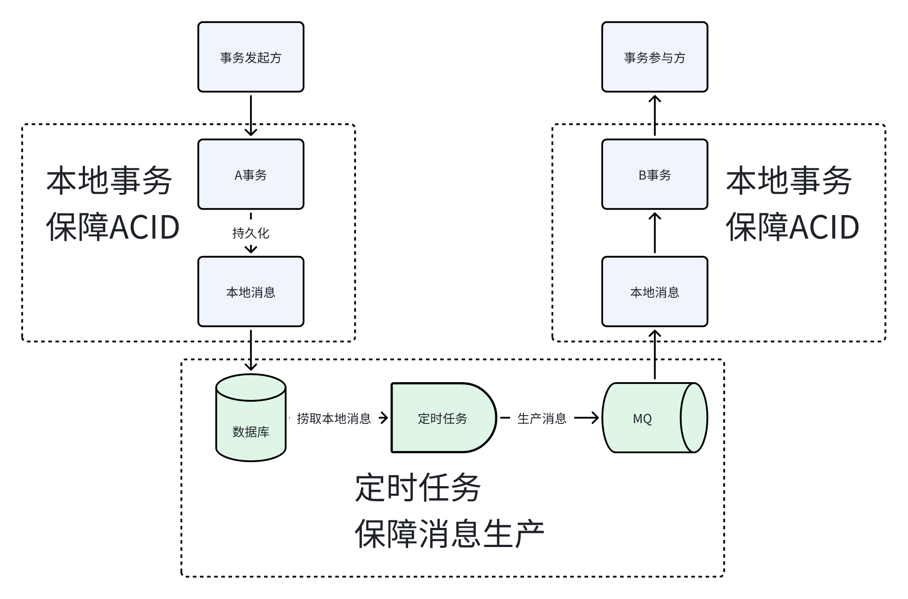
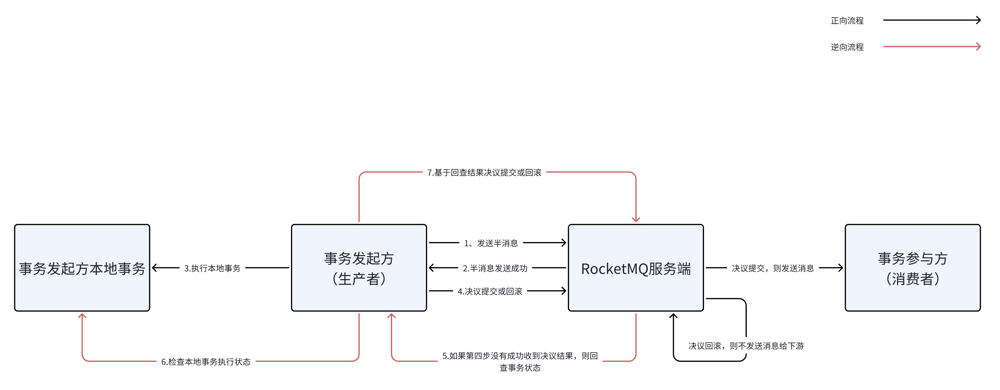

RocketMQ事务消息是柔性分布式事务的一种具体实现方案，本文，我们来理解一下，为什么事务消息能够保障分布式节点间数据的一致性。
背景
在 聊聊月租酒店项目中的交易系统设计 中，在关闭租约的场景下，我们使用了RocketMQ的事务消息作为可靠消息最终一致性的落地方案。
同样作为另一种可靠消息最终一致性的方案，在支付成功下外部订单的场景中，我们又使用了本地消息表的方式。
本文，我们就来研究一下可靠消息最终一致性，同时深度拆解一下RocketMQ事务消息是如何设计+实现的。
什么是不可靠消息？
我们看几段伪代码：
|
|
这段代码有几个问题：
- 当发送消息碰到网络超时，
a方法捕获到超时异常，此时本地事务回滚，但是消息却发到了MQ，此时本地数据与下游产生了不一致； - 当发消息耗时比较久时，会延长事务的时间，影响数据库性能；
我们可以尝试使用异步发送消息的方式来改善a方法：
|
|
或者也可以尝试把发消息放到事务外：
|
|
a2方法、b方法引入了新的问题，当事务执行成功，而发消息却失败了，那么下游就无法与上游事务保持一致。这种case就是我要讲的「不可靠消息」。普通消息跟本地事务无法保证事务的原子性。
这也是分布式事务中一致性最弱的一种落地方案：最大努力通知型。
这种方案虽然看起来「弱鸡」，实际也是一种常用的解法，适用场景：
- 分布式事务横跨多个系统，其中包括了外部系统（不可控、协调改造成本高）；
- 对最终一致的时间敏感度极低；
- 事务参与方处理结果不需要影响事务发起方（即事务不存在后置失败回滚）；
一种典型的场景就是签约、支付完成后，系统发短信通知给用户。此时通知消息可以容忍丢失。 另一种典型场景就是合同签约后，需要同步到GR的备案系统，此时的备案消息也可以容忍丢失。
一般实践中，我们可以在事务发起方预留状态查询接口，供事务参与方回查，也可以使用别的补偿方式，比如聊聊月租酒店项目中的交易系统设计 中超时关单的场景下，我们使用被动关单的方式补偿了低概率下的发消息失败的case。
当然了，有不可靠消息，也就有可靠消息。
什么是可靠消息？
可靠消息最终一致性的方案是典型的柔性事务解决方案，其适用场景是一致性要求不需要严格实时，允许有一定程度的延迟，同时不能接受消息丢失，业务效果表现为最终一致。
其基本的运作过程：
- 事务发起方执行完本地事务；
- 发送消息（不能丢失），这一步就是「可靠消息」的意思；
- 事务参与方（消费者）成功接受消息，并消费成功；
可靠消息强调的点：只要事务发起方将消息发出去，事务参与方就可以成功执行，整个分布式链路上能达到事务的最终一致。
如何实现可靠消息？
本地消息表
如 聊聊月租酒店项目中的交易系统设计 支付成功下外部订单的场景中我们实现的重试任务表就是一个典型的本地消息表。不过我们的重试任务表缺少了一个消息生产消费的链路，但是核心思想是一样的。
我画了一个本地消息表的基本设计图： 
这种方案的优点是比较成熟，通过本地消息表的方式持久化了消息数据，保障了消息不丢失，同时通过MQ消息解耦了多个事务，从而避免了分布式事务的问题。
但同时也有一些缺点：
- 消息表耦合到了事务发起方的业务库中，对业务存储有干扰，同时需要业务服务实现重试等逻辑；
- 事务参与方需要保证消费的幂等（这个问题不大）；
- 如果消息重试后失败，需要其他兜底手段；
- 服务职责耦合，不利于复用、拓展；
除了这种可靠消息方案，还有RocketMQ实现的更佳的方案。
RocketMQ事务消息
本地消息表方案有部分缺点已经被RocketMQ事务消息解决掉了。
比如通过使用RocketMQ事务消息，多个服务使用可靠消息机制时，不需要单独实现重试、本地消息存储的逻辑，起到了复用、拓展的作用。
设计原理
我们根据 RocketMQ官方文档：事务消息 理解一下事务消息的运作过程，我翻译了一下官方的流程图： 
其实一上来理解事务消息，可能有一点难度，但是经过上面从不可靠消息到本地消息表的分析，相信到这一步，事务消息的实现原理已经一目了然了：
- 半消息的发送、存储，其实就相当于是本地消息表中的存储，经过第二步的响应，
RocketMQ可以保证消息一定会存储到broker服务端（这一步提高可用性无非就是持久化+副本复制等操作）； - 第五六七步其实就是
RocketMQ实现的定时回查机制，保证能够处理首次事务决议没收到结果的异常情况； - 基于上面两方面的设计，
RocketMQ可以保证一阶段的结果，要么是成功要么是失败的，一阶段成功才继续二阶段的消息发送消费；
整个流程，RocketMQ使用如下的状态机保证流程运转：
在具体使用上，基本就以下几个要点：
- 创建
MessageType为Transaction的topic； - 在事务发起方的业务方法中发送消息；
- 实现
org.apache.rocketmq.client.producer.TransactionListener下的接口：executeLocalTransaction执行本地事务；checkLocalTransaction回查本地事务执行结果；
RocketMQ官方文档：事务消息 对于实践也有一些建议，可以参考一下。
源码简析
经过上面的设计分析，我们可以看到RocketMQ与本地消息表最大的区别就是本地消息持久化与事务状态回查的逻辑实现在了通用MQ中。
这块简单看下源码，不做过多源码解读。 我这里用的版本：
|
|
第一步：发送事务消息流程
从时序图不难看出，首先我们的服务端属于producer，主要用来触发生产事务消息的动作，在接到RocketMQ存储服务端响应后，尝试执行二阶段的事务执行，结束整体流程。
RocketMQ存储服务端也就是broker，在发送消息这一步主要负责消息的存储，针对事务半消息会使用一个单独的RMQ_SYS_TRANS_HALF_TOPIC存储维护。
第二步：回查事务处理状态
这一步涉及的代码稍微多一点。读懂这块可以了解一些RocketMQ大致的设计：
BrokerController是所有核心组件的总控，跟Spring/SpringBoot设计类似，所有的组件都托管，同时对应有一个Bootstrap启动类用于启动核心组件、一些任务；RocketMQ网络通信借助了Netty的能力，在接口层面设计了一个RemotingCommand表示请求，而对应不同的流程类型有不同的Processor；- 回查涉及到我们应用的服务端会注册对应的
CheckListener，最终broker回调到我们的服务时，在钩子函数中触发我们业务的回查逻辑；
小结一下就是这里无非就是实现两大块：
- 将事务半消息单独存储，我们的服务发消息给mq服务端；
- mq服务端启动任务回查我们的事务执行状态，成功则二阶段提交，否则就执行回滚；
总结
通过本文，我首先从上篇文章实际应用的案例入手，然后通过几段粗糙的伪代码过了一下不可靠消息的适用场景以及问题。
接着作为对比，我们引入了可靠消息的概念，首先分析了可靠消息的适用场景以及设计实现的要点，然后我们分析了一下其经典实现「本地消息表」方案的设计思路。
通过本地消息表的缺点，最后引入了本文的重点：RocketMQ事务消息，其解决了本地消息表的一些缺陷。我们通过设计流程、核心状态机了解了其设计原理，对涉及到的源码也做了时序调用的简析。
最后我们小结一下，可靠消息作为最终一致性满足BASE理论的方案，其适用的场景：
- 消息独立、可靠存储；
- 通过三方中间件解耦业务系统；
- 对数据一致性时间相对敏感；
其设计的核心能力：
- 半消息发送、存储；
- 事务发起执行；
- 事务状态回查；
- 二阶段消息发送；
以上，欢迎指导。